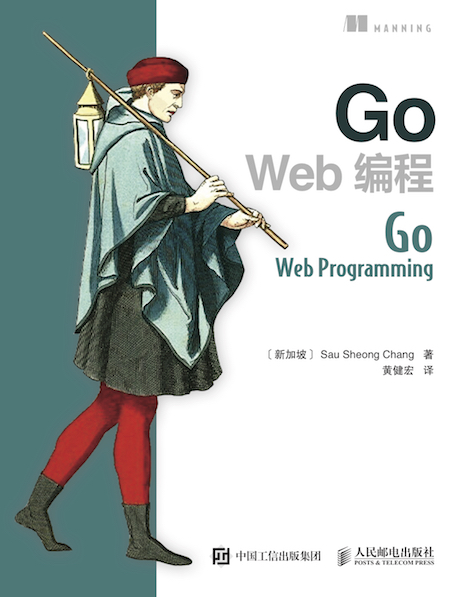

《Go Web编程》¶
{kind=link}
运用现代化的设计理念，构建可扩展、高性能的 Go Web 应用
欢迎来到《Go Web 编程》的读者服务网站， 这里会展示关于《Go Web 编程》一书的相关信息。
《Go Web 编程》原名《Go Web Programming》，原书由新加坡开发者 Sau Sheong Chang 创作、 Manning 出版社出版，人民邮电出版社引进了该书的中文版权，并将其交由黄健宏进行翻译。
《Go Web 编程》一书围绕一个网络论坛作为例子，教授读者如何使用请求处理器、多路复用器、模板引擎、存储系统等核心组件去构建一个 Go Web 应用，然后在该应用的基础上，构建出相应的 Web 服务。
购买链接¶
在异步社区购买纸书和电子书： http://www.epubit.com.cn/book/details/4705
在各大网店上购买本书： 京东（自营） 、 亚马逊（自营） 、 当当（自营） 、 互动出版网（china-pub）
在豆瓣上关注并购买本书： https://book.douban.com/subject/27204133/
关于本书¶
《Go Web 编程》的目标是教导读者如何运用现代化的设计理念， 构建可扩展、高性能的 Go Web 应用。
通过阅读本书， 您将会学习到：
Web 应用的基本定义和基础原理，以及使用 Go 编写 Web 应用的优势
如何设计和实现一个完整的 Go Web 应用
如何通过 Go 的 net/http 包接收请求、处理请求并返回响应
如何通过模板进行内容展示
如何以数据结构、CSV、gob、关系数据库等多种形式储存数据
如何以 XML 和 JSON 这两种不同的格式，实现 REST 风格的 Web 服务
如何对 Go Web 应用进行正确性测试以及性能基准测试
如何利用 Go 的并发优势提高 Web 应用的性能
如何将 Go Web 应用部署到独立服务器、云端以及 Docker 容器
大量关于 Go Web 开发的提示、技巧和技术
如果您想要了解更多本书的相关信息， 那么可以观看本书的简介视频。
目录&试读¶
以下目录中可点击的章节为试读内容
第二部分 —— Web 应用的基本组成部分
第 3 章：接收请求
第 4 章：处理请求
第 5 章：内容展示
第 6 章：储存数据
第三部分 —— 实战演练
第 7 章：Go Web 服务
第 8 章：应用测试
第 9 章：发挥 Go 的并发优势
第 10 章：Go 的部署
附录
对本书的赞誉¶
随着 Go 语言变得日益重要， 对优质 Go 教程的需求也在与日俱增， 本书的出现可谓恰逢其时。 —— Shaun Lippy ，Oracle 集团
无论你是一位经验老到的 gopher ， 还是一位刚开始接触 Go 的 Web 开发者， 这都是你不可或缺的一本书。 —— Benoit Benedetti ，尼斯大学
关于如何编写以及如何部署 Go Web 应用， 你想要知道的全部知识都已经囊括在这本书里面了。 —— Brian Cooksey ，Zapier 公司
本书堪称 Go Web 开发方面的权威入门教程。 —— Gualtiero Testa ，Factor-y S.r.l. 公司
作者简介¶

郑兆雄（Sau Sheong Chang）现任新加坡能源有限公司的数字技术总裁， 在此之前他做过 PayPal 的消费者工程经理， 也有过在 HP 、 Yahoo 以及 Garena 等公司的任职经历。
郑兆雄作为贡献者活跃于 Ruby 社区以及 Go 社区， 除了为开源项目贡献代码之外， 他还创作过好几本技术图书， 并在各种技术聚会和大会上发言。
要了解关于郑兆雄的更多信息， 请访问他的个人主页： https://about.me/sausheong
译者简介¶
黄健宏（huangz）是一位 90 年出生的计算机图书作者和译者， 他分别是《Redis设计与实现》一书的作者以及《Redis实战》一书的译者。
除了已出版的两本作品之外， 黄健宏还创作和翻译了《Go标准库中文文档》 、 《Redis命令参考》、 《SICP解题集》等一系列开源文档。
要了解关于黄健宏的更多信息， 请访问他的个人主页： https://huangz.works
相关资源¶
《Go Web 编程》在 Manning 出版社的主页： https://www.manning.com/books/go-web-programming
《Go Web 编程》的配套源码： https://github.com/sausheong/gwp